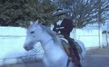
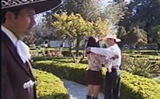

Haz click sobre las fotos para ver los nuevos videos de Miguel Angel "El Bronco", "Las Plebes Bravas" y "Estrellita", así como otros videos que "El Bronco" ha grabado a lo largo de su carrera artística.


El más reciente éxito de Miguel Angel "El Bronco" dedicado a la mujer sinaloense, exaltando su carácter decidido.
Un clásico de la música mexicana, interpretado por "El Bronco" con mariachi y banda sinaloense.
Tema ranchero que habla de un hombre a punto de quitarse la vida por una mala mujer.
